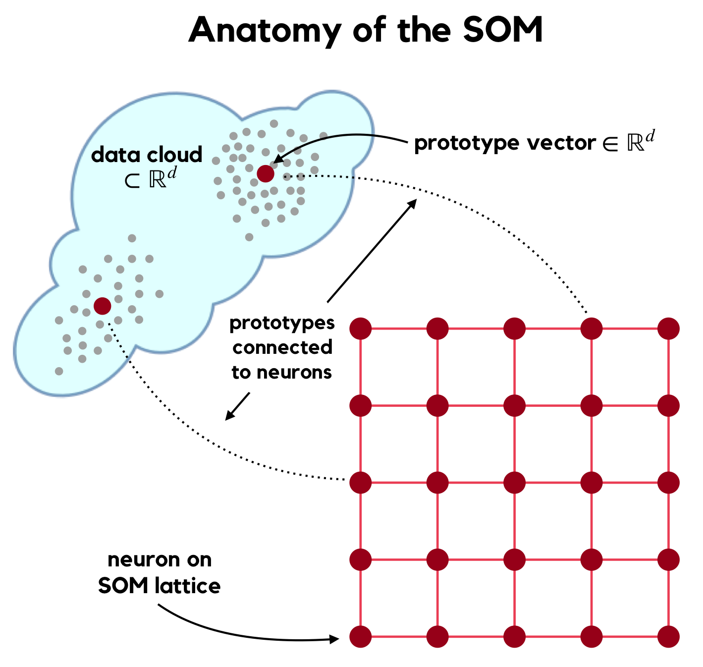

Chapter 2 Background
A Topology Representing Network (or TRN, [1]) arises from the quantization of a set of training data \(X = \{x_s \in \mathbb{R}^d\}_{s=1}^{nX}\) by a set of \(n_W\) codebook or prototype vectors \[ W = \{ w_j \in \mathbb{R}^d \}_{j=1}^{n_W}.\] The TRN is the graph whose vertices are the prototypes or, equivalently, their indexing set \(N = \{1, 2, \ldots, n_W \}\), and whose edges represent the topological adjacencies of the \(\{w_j\} \in \mathbb{R}^d\). \(\mathbb{R}^d\) is known as the TRN’s input space, while the indexing set \(N\) is known as its output space; the vector quantizer underlying the TRN maps \(\mathbb{R}^d \to N\). The most well known TRN is the Delaunay Graph \(\mathcal{D}\) [2] which is induced by the Voronoi tessellation [3] of the set of prototypes \(W\). The vertices of \(\mathcal{D}\) are the set \(N\); an edge connects \(j \leftrightarrow k \in N\) IFF the Voronoi cells \(V_j\) and \(V_k\), which are polytopes in \(\mathbb{R}^d\) generated by \(w_j\) and \(w_k\), respectively, intersect (i.e., share a face \(\in \mathbb{R}^{d-1}\)). Other TRNs with various properties are formed as sub-graphs of \(\mathcal{D}\), such as the Gabriel Graph [4] and Relative Neighbourhood Graph [5].
Martinetz & Schulten recognized that, for TRNs whose prototypes have been formed from sample data \(X\) to represent an unknown manifold \(\mathcal{M} \subset \mathbb{R}^d\), the TRN that most faithfully represents \(\mathcal{M}\) is another Delaunay sub-graph they call the Masked Delaunay Graph \(\mathcal{D}^{\mathcal{M}}\). The “masking” procedure intersects \(\mathcal{M}\) (via its representation by \(W\)) with \(\mathcal{D}\) and retains only those edges in \(\mathcal{D}\) which represent prototypes that are adjacent on \(\mathcal{M}\). By explicitly considering \(\mathcal{M}\), the adjacencies in \(\mathcal{D}^{\mathcal{M}}\) are capable of representing complex manifolds (particularly, completely embedded structure in \(\mathbb{R}^d\)).
Taşdemir and Merényi [6] extend \(\mathcal{D}^{\mathcal{M}}\) by weighting its edges by the number of samples which have informed the interpretation of connectivity on \(\mathcal{M}\). This graph, known as CADJ, exposes not only the existence of topological connectivities but also their strengths. The weight of edge \(i - j\) is given by \[ CADJ_{ij} = \# \{ x \, : \, BMU1(x)=i \, \& \, BMU2(x) = j \}.\] where \(x \in X\) and \(BMU1(x)\) and \(BMU2(x)\) return the index of the first and second Best Matching Unit to \(x\) in \(W\), respectively. The above expresson specifies each element of the \((n_W \times n_W)\) weighted adjacency matrix of the CADJ graph. As defined, the weights \(CADJ_{ij}\) are the counts of data which fall into the second-order Voronoi cells [3] \(V_{ij}\) of the second-order Voronoi tessellation generated by \(W\).
Analysis of the CADJ graph is useful for structural inference from learned representations of manifolds. More densely connected regions in \(\mathbb{R}^d\) (i.e., edges with higher CADJ adjacency weights) are more likely to indicate cohesive structure; conversely, weak topological connectivities can signal either “seams” in \(\mathcal{M}\) (areas where structure changes), or possibly very subtle structural differences that are easily overlooked by considering topography alone (i.e., by considering only the distances between adjacency prototypes).
In some special cases the TRN’s output space (prototype indexing set \(N\)) possesses its own topology. Kohonen’s Self-Organizing Map [7] is probably the most famous example of such a case. Relying on competitive neural learning, SOM training simultaneously forms the prototypes \(W \in \mathbb{R}^d\) and a (self-organized) representation of these prototypes as neurons on rigid lattice structure \(\mathcal{L}\) (the SOM’s output space, typically a rectangular or hexagonal lattice in \(\mathbb{R}^2\) or \(\mathbb{R}^3\)).

The visualizations afforded by the SOM’s output space have (for decades now) been harnessed for various tasks in pattern recognition and clustering. In the context of topology representation it has additional implications, such as allowing measures of the quality of this representation and, most importantly, providing the scaffolding required to view the TRN for data of arbitrary dimension. Without such a visualization the TRN is without much practical use, as it is “representing” topology on the indexing set \(N\) which has no natural “home” (no space in which we, as analysts, can view or interact with it).
Below we initialize a TRN object (which is the container for all information required to represent a TRN) for the learned SHGR SOM via the exposed class constructor in TopoRNet. The initialize_TRN method takes the topology representations of both the SOM’s input space (CADJ) and output space (the adjacency matrix of neurons prescribed by the lattice topology):
## Build a new TRN object for SHGR
SHGR.trn = TopoRNet::TRN$new()
SHGR.trn$initialize_TRN(SHGR.som$CADJ, SHGR.som$nu_ADJ)
% Initializing TRN object:
% ----------------------------------------------------------------
% Storing Output Topology:
% ++ edge list ... done
% 2710 edges stored
% ++ vertex degrees ... done
% ++ geodesic distances ... done
% max dist = 29
% ++ neighborhood sizes ... done
% ----------------------------------------------------------------
% Storing CADJ Topology:
% ++ edge list ... done
% 1874 edges stored
% ++ weights ... done
% ++ vertex degrees ... done
% ++ forward folding lengths ... done
% ++ backward folding lengths ... done
% ++ topology preserving radius ... done
% CADJ_TP_radius = 2
% ++ activating all edges ... done
% ----------------------------------------------------------------
% Calculating CADJvis statistics
% ++ CADJ local rank stats ... done
% ++ CADJ global rank stats ... done
% ++ CADJ length stats ... done
% Call $get_CADJvis_stats to view
% ----------------------------------------------------------------
% Storing CONN Topology:
% ++ edge list ... done
% 2234 edges stored
% ++ weights ... done
% ++ vertex degrees ... done
% ++ forward folding lengths ... done
% ++ backward folding lengths ... done
% ++ topology preserving radius ... done
% CONN_TP_radius = 3
% ++ activating all edges ... done
% ----------------------------------------------------------------
% Calculating CONNvis statistics
% ++ CONN local rank stats ... done
% ++ CONN global rank stats ... done
% ++ CONN length stats ... done
% Call $get_CONNvis_stats to view
% ----------------------------------------------------------------As visible in the output messages, initialize_TRN computes the CADJvis and CONNvis statistics of the TRN which are covered in the next chapter. The TRN object stores the graphs as an edge list, which is a two-column matrix indicating the \((i,j)\) indices of the vertices connected by each edge, and an edge weight vector whose elements list the weights of edges defined in the edge list. The edge list and their corresponding weights which are stored during initialization can be accessed via:
## First few CONN edges and their weights
head(SHGR.trn$CONN_EL)
% [,1] [,2]
% [1,] 2 1
% [2,] 3 1
% [3,] 21 1
% [4,] 22 1
% [5,] 83 1
% [6,] 84 1
head(c(SHGR.trn$CONN))
% [1] 57 2 69 3 2 1
## First few CADJ edges and their weights
head(SHGR.trn$CADJ_EL)
% [,1] [,2]
% [1,] 2 1
% [2,] 3 1
% [3,] 21 1
% [4,] 22 1
% [5,] 83 1
% [6,] 84 1
head(c(SHGR.trn$CADJ))
% [1] 25 2 28 1 1 1References
[1] T. Martinetz and K. Schulten, “Topology representing networks,” Neural Networks, vol. 7, no. 3, pp. 507–522, 1994.
[2] B. Delaunay, “Sur la sphere vide,” Izv. Akad. Nauk SSSR, Otdelenie Matematicheskii i Estestvennyka Nauk, vol. 7, pp. 793–800, 1934.
[3] A. Okabe, B. Boots, K. Sugihara, and S. N. Chiu, Spatial tessellations: Concepts and applications of Voronoi diagrams, 2nd ed. John Wiley; Sons, Inc., 2000.
[4] K. R. Gabriel and R. R. Sokal, “A new statistical approach to geographic variation analysis,” Systematic Zoology, vol. 18, no. 3, pp. 259–278, 1969.
[5] G. T. Toussaint, “The relative neighbourhood graph of a finite planar set,” Pattern recognition, vol. 12, no. 4, pp. 261–268, 1980.
[6] K. Taşdemir and E. Merényi, “Exploiting data topology in visualization and clustering of self-organizing maps,” IEEE Transactions on Neural Networks, vol. 20, no. 4, pp. 549–562, 2009.
[7] T. Kohonen, Self-organizing maps. Springer, 2000.